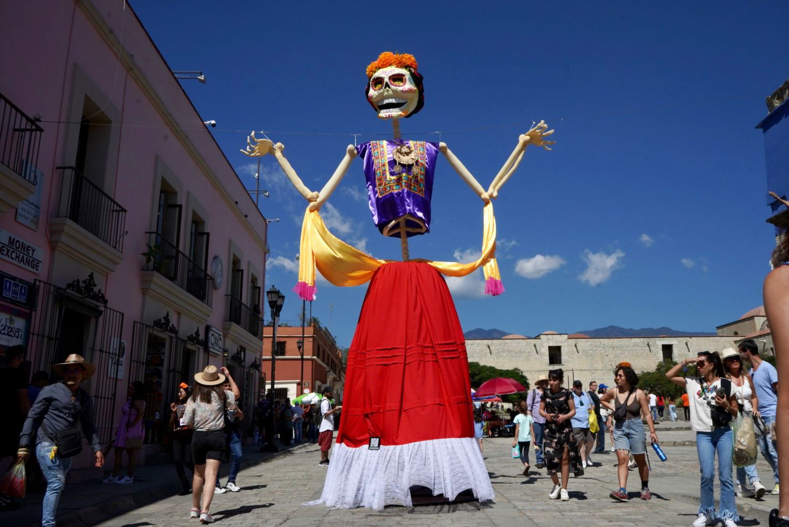
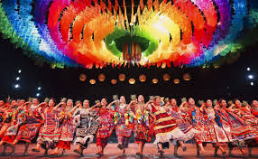

COSTUMBRES Y TRADICIONES
Oaxaca es un estado profundamente ligado a sus tradiciones, muchas de ellas de origen prehispánico. Las festividades son parte esencial de la vida comunitaria y reflejan la unión entre lo indígena y lo mestizo. Entre las costumbres más importantes destacan:
-La Guelaguetza: una festividad que se celebra en julio, en la que diversas comunidades del estado se reúnen para mostrar sus danzas, música y trajes típicos. Es un símbolo de identidad y cooperación entre los pueblos.
-Día de Muertos: celebrado con altares decorados con flores, velas, comida y objetos personales para honrar a los difuntos.
-Mayordomías: fiestas religiosas organizadas por los habitantes de los pueblos, que incluyen procesiones, música, comida y fuegos artificiales.
-Carnavales regionales, que combinan lo festivo con lo ceremonial.
 